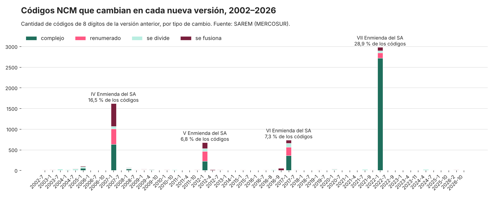

Nomenclatura Común del MERCOSUR
Los códigos de la NCM cambian con el tiempo: se dividen, se juntan o cambian de número. Escribí un código de cualquier versión desde enero de 2002 y te decimos a qué código de noviembre de 2026 corresponde, y por qué.
Escribí un código de 8 dígitos (con o sin puntos). Con 4 o 6 dígitos te mostramos los códigos vigentes que empiezan así.
Ejemplos: 8525.20.22 (celulares en 2002) · 0101.10.10 · 8517.13.00 · 1201
Pegá una lista de códigos NCM de 8 dígitos (uno por línea, o separados por comas o espacios; con o sin puntos) y bajá el resultado en un archivo que se abre con Excel: una fila por cada código de noviembre de 2026 al que corresponde, con su descripción, su arancel externo común y el tipo de cambio.
Cada cinco años la Organización Mundial de Aduanas revisa el Sistema Armonizado, la base de los primeros 6 dígitos de la NCM. En esas fechas (2007, 2012, 2017 y 2022) cambian cientos o miles de códigos; entre una enmienda y otra los cambios son pocos. La más grande fue la VII Enmienda (2022), que cambió el 28,9% de los códigos; la IV (2007), el 16,5%; la V (2012), el 6,8%, y la VI (2017), el 7,3%. La próxima, la VIII Enmienda (Sistema Armonizado 2027), rige desde el 1 de enero de 2027: el traductor se va a actualizar con esa versión.

El mismo producto pasa a tener otro número. Un código viejo, un código nuevo.
Un código se abre en varios más detallados. El comercio del código viejo se reparte entre los nuevos.
Varios códigos se juntan en uno solo.
Partes de varios códigos viejos van a varios códigos nuevos. Hay que mirar la descripción para saber cuál corresponde.
Cada código de 2002 a 2026, su período de validez, el tipo de cambio y el código de noviembre 2026.
El mismo mapeo en CSV, y el camino de cada código que cambió, paso por paso.
Cada cambio entre dos versiones seguidas: código viejo, código nuevo y tipo de cambio.
Se descargaron del sistema SAREM de la Secretaría del MERCOSUR las 63 versiones de la NCM y las tablas de correlación entre cada versión y la siguiente. Las tablas se encadenaron versión por versión, de enero de 2002 a noviembre de 2026, y cada tramo se controló contra SAREM. En los pasos de las enmiendas del Sistema Armonizado se revisaron además con las tablas de correlación de la Organización Mundial de Aduanas. Marzo de 2019 no tiene archivo en SAREM: se armó desde enero de 2019 con la tabla de correlación (por eso el mapeo usa 64 versiones). Y uno de los 63 archivos, la carpeta "2022" de SAREM, repite los códigos de septiembre de 2021.
El arancel externo común (AEC) que muestra el buscador es el de la versión de noviembre de 2026. Cuando un código viejo va a varios códigos nuevos, el buscador los muestra todos: elegir el correcto depende del producto, y se decide con la descripción y las notas de la nomenclatura, no por el parecido del número.
Ojo al comparar series de comercio: cuando un código se divide, se fusiona o tiene una correspondencia compleja, la tabla dice a qué códigos nuevos puede ir, pero no cuánto del comercio del código viejo corresponde a cada uno. Para repartir valores hace falta información del producto o un método de conversión propio.
No, en este mapeo. Se controló en las dos puntas: cada uno de los códigos que existieron entre 2002 y 2026 llega al menos a un código de noviembre de 2026 (ninguno queda "sin sucesor"), y cada uno de los 10.516 códigos de noviembre de 2026 ya existía en enero de 2002 o viene de un código anterior por una tabla de correlación (ninguno queda "sin antecesor"). Cuando una tabla de SAREM no traía un vínculo que sí figura en las tablas de la Organización Mundial de Aduanas, se agregó desde la OMA, y queda anotado.
En las tablas de SAREM, "ex" indica que la correspondencia es parcial: el código nuevo recibe solo una parte de la mercadería del código viejo, porque también recibe mercadería de otros códigos. En este mapeo aparece solo en ese caso (las divisiones simples no la llevan). Por eso el tipo "complejo" y "se fusiona" requieren mirar la descripción: el código viejo puede ir a varios códigos nuevos y cada uno abarca solo una parte.
Para comparar series de comercio de distintos años con la misma nomenclatura, por ejemplo despachos aduaneros de 2011 y de 2025, o para saber qué arancel corresponde hoy a un producto que se registró con un código viejo.
No. Es una recopilación independiente hecha con los archivos públicos de SAREM. Para cualquier uso formal, consulte la fuente oficial.
Dejá tu comentario de forma anónima: no se pide nombre ni correo.
Dejar un comentario